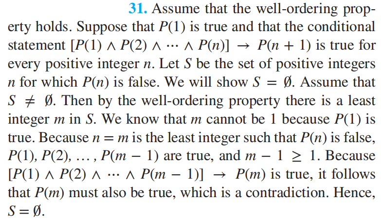

Chap 5 Induction and Recursion¶
Mathematical Induction¶
Mathematical Induction¶
数学归纳法(mathematical induction)：用来证明对于所有正整数\(n\)，命题函数\(P(n)\)均为真
数学归纳法原理(PRINCIPLE OF MATHEMATICAL INDUCTION)
- 基本步骤(BASIS STEP)：验证\(P(1)\)为真
- 归纳步骤(INDUCTIVE STEP)：证明对于所有正整数\(k\)，条件语句\(P(k) \rightarrow P(k + 1)\)为真
为了完成归纳步骤，我们需要假设\(P(k)\)为真(这被称为归纳假设(inductive hypothesis))，然后在这一假设下，证明\(P(k + 1)\)为真
用推理规则(inference rules)表达上述原则：\((P(1) \wedge \forall k (P(k) \rightarrow P(k + 1))) \rightarrow \forall nP(n)\)
注意：我们假设\(P(k)\)为真，不是对于所有正整数\(k\)而言，而是想通过这个假设证明\(P(k + 1)\)为真，因此通过数学归纳法得到的证明不是循环论证
形象记忆数归
- 无限高的梯子
- 多米诺骨牌

Why Mathematical Induction is Valid¶
可以用良序性(well-ordering property) 证明数学归纳法的合法性
良序性：对于一个包含正整数的集合，它的每个非空子集都有最小的元素
证明(归谬法)
- 假设至少有一个正整数\(n\)，\(P(n)\)为假，那么包含正整数\(n\)且满足\(P(n)\)为假的集合\(S\)非空
- 因此根据良序性，\(S\)中有一个最小的元素，记作\(m\)。因为\(P(1)\)为真，所以\(m > 1\)，因此\(m - 1\)也是正整数
- 因为\(m - 1\)比\(m\)还小，说明\(m - 1\)不在\(S\)中，所以\(P(m - 1)\)为真
- 又因为\(P(m - 1) \rightarrow P(m)\)为真，所以\(P(m)\)为真，得到矛盾。因此对于每个正整数\(n\)，\(P(n)\)为真
Choosing the Correct Basis Step¶
有时，基本步骤可能不是从1开始，而是从整数\(b\)开始的。因此在基本步骤中，要先验证\(P(b)\)为真
Guidelines for Proofs by Mathematical Induction¶
🌟数学归纳法证明模版
- 将问题转化为以下形式："\(\forall n > b, P(n)\)"，其中\(b\)为固定的整数。如果是对所有正整数满足\(P(n)\)为真，则令\(b = 1\)；如果是对所有非负整数满足\(P(n)\)为真，则令\(b = 0\)。对于某些情况，比如不等式，需要通过\(P(n)\)的真值表(\(n\)的值较小时)来决定合适的\(b\)
- 写下“Basis Step”一词，然后证明\(P(b)\)为真，注意为\(b\)选取正确的值
- 写下"Inductive Step"一词，然后明确写出归纳假设，比如"Assume that \(P(k)\) is true for an arbitrary fixed integer \(k \ge b\)"
- 写下\(P(k + 1)\)是什么，即在该归纳假设下要证明什么
- 利用假设\(P(k)\)证明\(P(k + 1)\)
通常，这是数学归纳法证明中最困难的部分。选定最有希望的策略，并思考如何用归纳假设构建归纳步骤的证明。同时，确保对于所有整数\(k \ge b\)，证明都是合法的，关注当\(k\)的取值较小时（包括\(k = b\)）证明的处理情况
- 为归纳步骤下好结论，比如写下"This completes the inductive step"
- 当完成了基本步骤和归纳步骤后，写下最后的结论，比如"By mathematical induction, \(P(n)\)对于所有整数\(n \ge b\)均为真"
The Good and the Bad of Mathematical Induction¶
- Good：证明猜想(Conjecture) 的一大利器
- Bad：不能用来发现新的定理，而且无法从证明过程中看出定理的本质所在
也许你在根本没有理解某个定理的情况下，也能通过数学归纳法证明出该定理
Examples of Proofs by Mathematical Induction¶
例题
见教材\(P_{336-340}\)
见教材\(P_{340-342}\)
调和数(harmonic numbers)：\(H_j = 1 + \dfrac{1}{2} + \dfrac{1}{3} + \dots + \dfrac{1}{j}\)
结论：\(H_{2^n} \ge 1 + \dfrac{n}{2}\)(证明过程见\(P_{342}\))
调和级数(harmonic series)：\(1 + \dfrac{1}{2} + \dfrac{1}{3} + \dots + \dfrac{1}{n} + \dots\) 它是发散的(divergent)
见教材\(P_{342-344}\)
这里我放了1个例题，虽然课件里没讲，但我觉得这题挺不错的，尤其是归纳步骤中的最后一步


见教材\(P_{344-346}\)
见教材\(P_{346-347}\)
书上的例题是证明第3章中安排讲座问题使用的贪心算法是否得到的是最优解，但我有点看不太懂😕
见教材\(P_{347-349}\)

-
基本步骤：因为只有3个人，画一个三角形可以较为直观地解释
-
递归步骤：
- case 1: 如果有人向A或B丢馅饼，那么除了A，B之外的2k + 1个人只有2k个馅饼，显然那2k + 1个人中至少有一个人没有被馅饼砸中
- case 2: 如果没有人向A和B丢馅饼，则剩下2k + 1个人满足归纳假设的条件，在他们之中至少存在一个幸存者S，他不仅没被那2k个人砸中，也不会被A或B砸中(因为A和B没被原来2k + 1个人砸中，说明A和B之间的距离是他们离其他人的最近距离，因此A和B会互相扔馅饼)
综上，至少有1位幸存者
Mistaken Proofs by Mathmatical Induction¶
使用数学归纳法时，请确保基本步骤(basis step)和归纳步骤(inductive step) 都正确！！！
Supplements(from Exercises)¶
- 伯努利不等式(Bernoulli's inequality)：如果\(h > -1\)，对于所有非负整数\(n\)，满足\(1 +nh \le (1 + h)^n\)
- 假设\(a, b\)为实数，且\(0 < b < a\)，如果\(n\)为正整数，则\(a^n - b^n \le na^{n - 1}(a - b)\)成立
- 对于正整数\(n\)，满足\(1 + \dfrac{1}{\sqrt 2} + \dfrac{1}{\sqrt 3} + \dots + \dfrac{1}{\sqrt n} > 2(\sqrt{n + 1} - 1)\)
- 如果\(n\)是非负整数，则\(H_{2^n} \le 1 + n\)
- \(H_1 + H_2 + \dots + H_n = (n + 1)H_n - n\)
- 当\(n \ge 3\)且\(n\)为整数时，对于有\(n\)个元素的集合，它有\(\dfrac{n(n - 1)(n - 2)}{6}\)个包含3个元素的子集
Strong Induction and Well-Ordering¶
注：数学归纳法、强归纳法、良序性三者是等价的
Strong Induction¶
强归纳法(STRONG INDUCTIVE)
- BASIS STEP：验证\(P(1)\)为真（与数学归纳法一样）
- INDUCTIVE STEP：证明对于所有正整数\(k\)，条件语句\([P(1) \wedge P(2) \wedge \dots \wedge P(k)] \rightarrow P(k+1)\)为真
强归纳法的归纳假设是对于\(j = 1, 2, \dots, k, P(j)\)为真。因此它相比数学归纳法更加灵活
强归纳法也被称为数学归纳法第二原理(second principle of mathematical induction) 或完全归纳法(complete induction)。因此数学归纳法也被称为不完全归纳法(incomplete induction)（但这个名称不太符合它，因为数学归纳法是一个“完全”的方法）
Examples of Proofs Using Strong Induction¶
选择数学归纳法 OR 强归纳法？
- 如果对于所有正整数\(k\)，能够直接证明\(P(k) \rightarrow P(k + 1)\)时，应使用数学归纳法
- 如果发现：对于不超过\(k\)的正整数\(j\)满足\(P(j)\)为真，这个假设能够证明\(P(k + 1)\)为真；但无法仅仅从\(P(k)\)为真的条件中证明\(P(k + 1)\)为真。这时应当使用强归纳法
强归纳法的推广：
令\(b\)为固定的整数，\(j\)为固定的正整数，为了证明对于所有整数\(n \ge b\)，\(P(n)\)均为真，完成以下步骤：
- BASIS STEP：验证命题\(P(b), P(b + 1), \dots, P(b + j)\)为真
- INDUCTIVE STEP：对于所有整数\(k \ge b + j\)，证明\([P(b) \wedge P(b + 1) \wedge \dots \wedge P(k)] \rightarrow P(k + 1)\)为真
🌰

将k+1分解为两个因数a和b后，因为a、b在归纳假设的范围内，因此它们满足是质数或多个质数的乘积的条件，所以k+1显然也满足该条件
Using Strong Induction in Computational Geometry¶
计算几何(computational geometry)：离散数学的分支，研究关于几何图形的计算问题
定义：
-
多边形(polygon)：由一系列线段\(s_1, s_2, \dots, s_n\)(它们被称为边(sides))构成的封闭几何图形
如果没有两条非连续的边相交，那么称为简单(simple) 多边形
-
顶点(vertex)：多边形中每对连续的边\(s_i, s_{i + 1}(i = 1, 2, \dots, n - 1)\)(也包括\(s_n\)和\(s_1\))上的公共端点
- 每个简单多边形将平面划分成2个区域：
- 内部(interior)：曲线内的所有点
- 外部(exterior)：曲线外的所有点
- 凸(convex) 多边形：任意两个顶点间的线段位于多边形的内部或边界上。否则称为凹(nonconvex) 多边形
- 对角线(diagonal)：在简单多边形中，连接两个非连续顶点的线段
- 内部对角线(internal diagonal)：如果除了端点外完全在内部的对角线
定理1：对于一个有\(n\)(\(n\)为\(\ge 3\)的整数)条边的简单多边形，它能被划分为\(n - 2\)个三角形
证明（需要下面的引理1）

引理1：每一个至少有4条边的多边形有一个内部对角线
Proofs Using the Well-Ordering Property¶
🌰

假设\(r \ge d\)，因为\(a = dq_0 + r\)，所以\(a - d(q_0 + 1) = r - d \ge 0\)，因此存在\(q\)和\(r\)，使得\(0 \le r < d\)成立（且\(q\)和\(r\)是唯一的）
Supplements(from Exercises)¶
-
对于所有正整数对\(n, k\)，可以通过以下步骤证明\(P(n, k)\)为真(以下均省略"对于所有正整数\(n, k\)")
- \(P(1, 1)\)为真，且\(P(n, k) \rightarrow [P(n + 1, k) \wedge P(n, k + 1)]\)为真
- \(P(1, k)\)为真，且\(P(n, k) \rightarrow P(n + 1, k)\)为真
- \(P(n, 1)\)为真，且\(P(n, k) \rightarrow P(n, k + 1)\)为真
-
数学归纳法、强归纳法、良序性三者等价的证明：
- 用良序性证明数学归纳法：见上面
- 用良序性证明强归纳法：

- 用数学归纳法证明良序性：

Recursive Definition and Structural Induction¶
Recursively Defined Functions¶
递归(或归纳)定义(recursive/inductive definition)：比如下面对函数的定义(其域为非负整数)
- BASIS STEP：具体说明自变量为0时函数的值
- 递归步骤(RECURSIVE STEP)：给定一个规则——通过前面更小的整数下的函数值，得到在某个整数下的函数值
递归定义函数是严格定义的(well defined)，也就是说，
- 对于给定的任意正整数，我们都能使用定义的两部分(即基本步骤和递归步骤)，找到对应正整数的函数值
- 无论我们怎样使用定义的两部分，总能得到相同的值
对于某些递归定义函数，前\(k\)个正整数对应的函数值已经给出；并且给定了一个规则：通过一些或全部前\(k\)个整数下的函数值，得到在某个整数下的函数值。这种也是严格定义的函数，它遵循强归纳。比如前面讲到的斐波那契数便是如此。下面将运用斐波那契数得到一些性质：

应用：证明欧几里得算法\(\text{gcd}(a, b)\)中的除法次数为\(O(\log b)\)
定理1——拉梅定理(LAME'S THEOREM)：令\(a, b\)为正整数且\(a \ge b\)，那么在欧几里得算法中，得到\(\text{gcd}(a, b)\)所需除法次数小于等于5倍的\(b\)的十进制位数
证明

因为\(b\)的十进制位数为\(\lfloor \log_{10} b \rfloor + 1 \le \log_{10}b + 1\)，由定理1知除法次数小于等于\(5(\log_{10} b + 1)\)。又因为\(5(\log_{10} b + 1)\)是\(O(\log b)\)，因此可以得到上述结论。
Recursively Defined Sets and Structures¶
递归定义集合(recursively definition of sets) 分为两部分：
- 基本步骤(basis step)：具体说明初始的一组元素
- 递归步骤(recursive step)：提供让已知的新元素进入该集合的规则
递归定义也可包含一个排他规则(exclusion rule)：递归定义的集合不包含除了在基本步骤中说明的元素，或者通过递归步骤产生的元素之外的元素。
🌰

递归定义在研究字符串(strings) 时扮演重要角色：来自字母表\(\Sigma\)的字符串，是一个由来自\(\Sigma\)的符号构成的有限序列。
定义：来自字母表\(\Sigma\)的字符串集合\(\Sigma^*\)，按照下面步骤递归定义：
- BASIS STEP：\(\lambda \in \Sigma^*\)，\(\lambda\)是不包含符号的空字符串
- RECURSIVE STEP：如果\(w \in \Sigma^*\)且\(x \in \Sigma\)，那么\(wx \in \Sigma^*\)
在递归步骤中，通过在原有字符串的末尾添加一个符号来形成新的字符串。
🌰位串的定义：

递归定义还可以用来定义关于递归定义函数中元素的运算和函数，比如下面这两个定义：
-
通过拼接(concatenation)，将两个字符串结合起来。令\(\Sigma\)为符号集，\(\Sigma^*\)为由\(\Sigma\)里的符号构成的字符串集。下面递归定义两个字符串的拼接运算，记作\(\cdot\)
- BASIS STEP：如果\(w \in \Sigma^*\)，那么\(w \cdot \lambda = w\)，其中\(\lambda\)为空字符串
- RECURSIVE STEP：如果\(w_1 \in \Sigma^*, w_2 \in \Sigma^*, x \in \Sigma\)，那么\(w_1 \cdot (w_2 x) = (w_1 \cdot w_2) x\)
\(w_1 \cdot w_2\)通常记作\(w_1w_2\)
-
字符串长度(length)：记作\(l(w)\)，\(\begin{cases}l(\lambda) = 0 \\ l(wx) = l(w) + 1 \quad \text{ if } w \in \Sigma^* \text{ and } x \in \Sigma \end{cases}\)
递归定义的另一重要应用是用来定义各种类型的合式公式(well-formed formulae)
-
命题逻辑(propositional logic) 中的合式公式：包含\(\mathbf{T}, \mathbf{F}\)、命题变量和来自集合\(\{\neg, \wedge, \vee, \rightarrow, \leftrightarrow \}\)中的运算符
- BASIS STEP：\(\mathbf{T}, \mathbf{F}, s\)，其中\(s\)为命题变量，它们是合式公式
- RECURSIVE STEP：如果\(E, F\)是合式公式，那么\((\neg E), (E \wedge F), (E \vee F), (E \rightarrow F), (E \leftrightarrow F)\)也是合式公式
-
运算符(operators) 和操作数(operands) 中的合式公式：包含变量、数字、和来自集合\(\{+, -, *, /, \uparrow\}\)的运算符(\(\uparrow\)指的是指数运算)
- BASIS STEP：如果\(x\)是数字或变量，则\(x\)是合式公式
- RECURSIVE STEP：如果\(F, G\)是合式公式，则\((F + G), (F - G), (F * G), (F / G), (F \uparrow G)\)是合式公式
树(trees) 也可采用递归定义（具体内容Chap 11）
-
有根树(rooted trees)：是一组顶点的集合，其中包含一个唯一的根节点；以及连接这些顶点的边。递归定义如下：
- BASIS STEP：单个顶点r是一棵有根树
- RECURSIVE STEP：假设\(T_1, T_2, \dots, T_n\)是不相交的有根树，它们的根节点分别为\(r_1, r_2, \dots, r_n\)。那么新的有根树起始于一个根节点\(r\)，该点不在\(T_1, \dots, T_n\)中的任何一棵树中，然后从\(r\)开始，向\(r_1, \dots, r_n\)添加边。这样就形成了一棵有根树

根据该递归定义，可以构造出无穷多棵有根树
二叉树(binary tree)：有根树的一种特殊情况。我们给出下面两种二叉树的递归定义：
-
扩展二叉树(extended binary tree)
- BASIS STEP：空树是一棵扩展二叉树
- RECURSIVE STEP：如果\(T_1, T_2\)是不相交的两棵（非空）扩展二叉树，那么就有一棵扩展二叉树，记作\(T_1 \cdot T_2\)，它由一个根节点\(r\)，以及一条从根节点连接左子树\(T_1\)的根节点的边，和一条连接右子树\(T_2\)的根节点的边

-
满二叉树(full binary tree)
- BASIS STEP：仅由单个顶点\(x\)构成一棵满二叉树
- RECURSIVE STEP：如果\(T_1, T_2\)是两棵不相交的满二叉树，那么就有一棵满二叉树，记作\(T_1 \cdot T_2\)，它由一个根节点\(r\)，以及从根节点连接到作为左子树的\(T_1\)的根节点，和作为右子树的\(T_2\)的根节点的边

简化版：这种二叉树除了叶子节点外，其余节点要么有2个孩子，要么没有孩子
Structural Induction¶
结构归纳法(structural induction)：
- BASIS STEP：证明结果适用于所有在递归定义的基本步骤中说明的元素
- RECURSIVE STEP：证明如果对于每个用于在定义的递归步骤中构建新元素的元素，语句均正确，那么结果也适用于这些新构建的元素
结构归纳法的有效性可由非负整数的数学归纳法得到。
令\(P(n)\)表示：对于所有由\(n\)次或更少次来自递归定义中递归步骤的规则应用而产生的元素，结果为真
- BASIS STEP：证明\(P(0)\)为真
- RECURSIVE STEP：假设\(P(k)\)为真，那么\(P(k + 1)\)为真
例题


递归定义满二叉树\(T\)的高度\(h(T)\)
- BASIS STEP：只有一个根节点\(r\)的满二叉树\(T\)的高度为\(h(T) = 0\)
- RECURSIVE STEP：如果\(T_1, T_2\)都是满二叉树，那么满二叉树\(T = T_1 \cdot T_2\)的高度\(h(T) = 1 + \max(h(T_1), h(T_2))\)
递归定义满二叉树的顶点个数\(n(T)\)
- BASIS STEP：只有一个根节点\(r\)的满二叉树\(T\)的顶点个数\(n(T) = 0\)
- RECURSIVE STEP：如果\(T_1, T_2\)都是满二叉树，那么满二叉树\(T = T_1 \cdot T_2\)的顶点个数\(n(T) = 1 + n(T_1) + n(T_2)\)
定理2：如果\(T\)为满二叉树，那么\(n(T) \le 2^{h(T) + 1} - 1\)
证明
Generalized Induction¶
广义归纳法(generalized induction) 用于证明关于除了整数集外，也具有良序性的集合的结论。
🌰定义一个有序的\(\mathbb{N} \times \mathbb{N}\)，即非负整数的有序对。如果\(x_1 < x_2\)，或者\(x_1 = x_2\)且\(y_1 < y_2\)，那么\((x_1, y_1) \le (x_2, y_2)\)，这被称为词典序(lexicographic ordering)(Chap 9会讲到)。它满足良序性，这意味着我们可以递归定义\(a_{m, n}\)，其中\(m \in \mathbb{N}, n \in \mathbb{N}\)，见下面的具体例子👇

Supplements(from Exercises)¶
关于斐波那契数的一些性质(以下\(n\)均为正整数)：
- \(f_1^2 + f_2^2 + \dots + f_n^2 = f_nf_{n + 1}\)
- \(f_1 + f_3 + \dots + f_{2n-1} = f_{2n}\)
- \(f_{n+1}f_{n-1} - f_n^2 = (-1)^n\)
- \(f_0f_1 + f_1f_2 + \dots + f_{2n-1}f_{2n} = f_{2n}^2\)
- \(f_0 - f_1 + f_2 - \dots - f_{2n-1} + f_{2n} = f_{2n-1} - 1\)
- 令\(\mathbf{A} = \begin{bmatrix}1 & 1 \\ 1 & 0\end{bmatrix}\)，则\(\mathbf{A}^n = \begin{bmatrix}f_{n + 1} & f_n \\ f_n & f_{n - 1}\end{bmatrix}\)
关于最大值和最小值函数的一些性质：
- \(\max(-a_1, -a_2, \dots, -a_n) = -\min(a_1, a_2, \dots, a_n)\)
- \(\max(a_1 + b_1, a_2 + b_2, \dots, a_n + b_n) \le \max(a_1, a_2, \dots, a_n) + \max(b_1, b_2, \dots, b_n)\)
- \(\min(a_1 + b_1, a_2 + b_2, \dots, a_n + b_n) \ge \min(a_1, a_2, \dots, a_n) + \min(b_1, b_2, \dots, b_n)\)
关于字符串：
- 字符串\(w\)的逆序(reversal) 记为\(w^R\)
- \(w^i\)：拼接\(i\)个字符串\(w\)后形成的新字符串
性质：
- \((w_1w_2)^R = w_2^Rw_1^R\)
- \(l(w^i) = i \cdot l(w)\)
- \((w^R)^i = (w^i)^R\)
正整数\(n\)的分拆(partition)：将\(n\)表示为一些正整数的和，这些正整数的顺序并不重要。令\(P_m\)等于对于\(m\)不同分拆的个数，\(P_{m, n}\)表示分拆出来的正整数不超过\(n\)，且对于\(m\)不同分拆的个数
- \(P_{m, m} = P_m\)
- \(P_{m, n} = \begin{cases}1 & \text{if } m = 1 \\ 1 & \text{if } n = 1 \\ P_{m, m} & \text{if } m < n \\ 1 + P_{m, m - 1} & \text{if } m = n > 1 \\ P_{m, n - 1} + P_{m - n, n} & \text{if } m > n > 1\end{cases}\)
阿克曼函数(Achermann's funciton)
它在递归函数理论，以及研究包含集合合并的特定算法的复杂度(比如并查集)中发挥重要作用，定义如下：
性质(下面的字母均表示非负整数)：
- \(A(m, n + 1) > A(m, n)\)
- \(A(m + 1, n) \ge A(m, n)\)
- \(A(i, j) \ge j\)
关于对数(以2为底)：
叠对数(iterated logarithm)\(\log^*n\)：它的值为使\(\log^{(k)}n \le 1\)成立的最小的非负整数\(k\)
将上面对数的定义推广至更一般的函数\(f(n)\)（它是实数域上的单调递增函数）
叠函数(iterated function)\(f^*_c\)：它的值为使\(f^{(k)}n \le c\)成立的最小的非负整数\(k\)
Recursive Algorithm¶
如果一个算法通过将问题规模减少至拥有更小输入的相同问题，那么称这个算法是递归的(resursive)
一些例子


- 线性查找：

- 二分查找：

Proving Recursive Algorithms Correct¶
通常，我们利用数学归纳法、强归纳法证明递归算法的正确性
Recursion and Iteration¶
- 递归(resursion)法：通过连续减少计算规模，在更小的数字上求解函数
- 迭代(iteration)法：从一个或多个整数对应的函数值开始（基本情况），然后连续使用递归定义，找到连续的更大的数对应的函数值
🌰找到第\(n\)个斐波那契数的算法
- 递归版本
- 迭代版本

通过这个例子，不难看出递归和迭代算法的特征：
- 对于每个递归算法，总有等价的迭代算法
- 递归算法相比迭代算法，通常更小、更优雅、更易于理解
- 然而，迭代算法在空间和时间上的效率往往高于递归算法
The Merge Sort¶
因为课上没讲（应该不会在dm考到），这里就直接贴上算法和定理，没有具体说明
算法实现：

引理1：两个排好序的列表，分别有\(m\)和\(n\)个元素，将它们合并称一个有序列表所需的比较次数为\(m + n - 1\)次
定理1：通过归并排序对有\(n\)个元素的列表排序所需的比较次数为\(O(n \log n)\)
Supplements(from Exercises)¶
快速排序(quick sort)：要对\(a_1, a_2, \dots, a_n\)排序，先找到\(a_1\)，然后形成两个子列表：第一个子列表中的所有元素小于\(a_1\)，第二个子列表中的所有元素大于\(a_1\)，并且分别对它们排好序。接着将\(a_1\)放入第一个子列表的末尾。递归重复上述步骤，直到所有子列表仅包含一项。最后通过有序地结合只包含一个元素的子列表，得到排好序的包含\(n\)个元素的列表
Program Correctness¶
Program Verification¶
如果一个程序对所有可能的输入，均产生正确的输出，那么称这个程序是正确的(correct)
证明一个程序的正确性包含两个部分：
- 部分正确性(partial correctness)：程序终止时能够得到正确的答案
- 首断言(initial assertion)：必须有输入
- 末断言(final assertion)：必须有输出
- 程序总是能够终止
定义：一个程序，或者程序段\(S\)，当对于\(S\)的输入值，首断言\(p\)正确，且\(S\)终止，那么对于\(S\)的输出值，末断言\(q\)正确，称\(S\)关于\(p\)和\(q\)部分正确(partially correct)，记作\(p\{S\}q\)（这个记号被称为霍尔三元组(Hoare triple)）
Rules fo Inference¶
运用推理规则(rule of inference)，将程序划分为一系列的子程序，然后证明每个子程序正确，以此证明程序的正确性。
具体说明：将程序\(S\)拆成两个子程序\(S_1,S_2\)，记作\(S = S_1 ; S_2\)。假设\(S_1\)关于首断言\(p\)和末断言\(q\)的正确性，和\(S_2\)关于首断言\(q\)和末断言\(r\)的正确性已经建立。这表明：如果\(p\)为真且\(S_1\)得到执行并终止，那么\(q\)为真；如果\(q\)为真且\(S_2\)得到执行并终止，则\(r\)为真。这个规律被称为复合律(composition rule)，并记作：

Conditional Statements¶
对于以下形式的程序段：

要验证该程序段关于首断言\(p\)和末断言\(q\)正确：
- 当\(p\)为真且condition也为真时，\(S\)终止后，\(q\)为真
- 当\(p\)为真且condition为假时，\(q\)为真
因此我们得到以下推理规则：

对于以下形式的程序段：

我们得到以下推理规则：

Loop Invariants¶
对于以下形式的程序段：

循环不变式(loop invariant)\(p\)：当\(S\)被执行时保持真值为真的断言
我们有以下推理规则：

Supplements(from Exercises)¶
- 斐波那契数的一条性质：\(f_kf_n + f_{k+1}f_{n+1} = f_{n+k+1}\)
- 卢卡斯数(Lucas numbers) 的性质(\(I_0 = 2,\ I_1 = 1,\ I_n = I_{n - 1} + I_{n - 2}, n = 2,3,4,\dots\))
- \(f_n + f_{n+2} = I_{n+1}\)
- \(I_0^2+I_1^2+\dots +I_n^2 = I_nI_{n+1}+2\)
- 麦卡锡91函数(McCarthy 91 function) $$ M(n) = \begin{cases}n - 10 & \text{if } n > 100 \ M(M(n+11)) & \text{if } n \le 100\end{cases} $$
- 当一个集合的每个非空子集都有一个最小元素，那么称该集合是良序的(well ordered)
- 包含所有括号平衡字符串(balanced strings of parentheses) 的递归定义：
- \(\lambda \in B\)，\(\lambda\)为空串
- \((x) \in B, xy \in B\)，如果\(x, y \in B\)
- 自我生成序列(self-generating sequences)：由简单的递推关系和规则产生的序列
- Golomb self-generating sequences
创建日期: 2024年6月12日 14:11:51
评论区